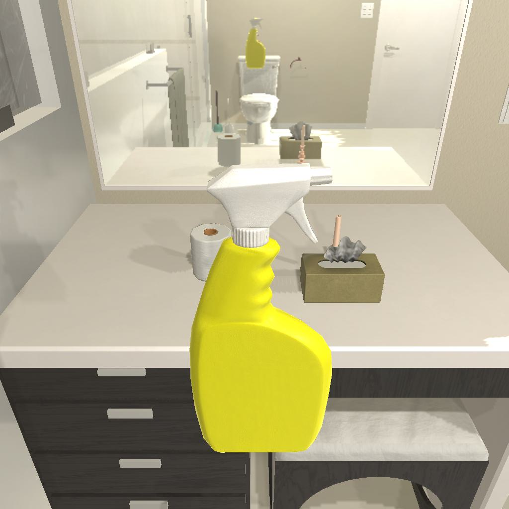

---------------------------------------------------------task: 28---------------------------------------------------------
--------------------------------------------------------------------------------------------------------------------------------------------------------------------
--------------------------------------------------------------------------------------------------------------------------------------------------------------------
Step:--------------------------------------------------------------------------6-------------------------------------------------------------------------------
----------------------------------------
VLM Prompt:
Image1:
Image2:
**Instruction**
1. Analyze the provided images to identify all visible household objects and compare the difference between images (e.h. whether the object is opened or not and taken on hand or not), focusing on those relevant to the task description "put two spraybottle in toilet."
2. Use the analysis of images and the task hint "The agent must find an object of the desired type, pick it up, find the correct location to place it, put it down there, then look for another object of the desired type, pick it up, return to previous location, and put it down there with the other object." to answer the question: what is the most reasonable action in the choices for the task description "put two spraybottle in toilet"?
3. Decide and write the answer using the template: The answer is: (i): , where i is the real number. If there is no desired object in images, search every place based on **Initial Observation** to find the object. And if no one is exactly correct, choose a similar answer.
**Initial Observation**
You are in the middle of a room. Looking quickly around you, you can see bathtub (1), bathtubbasin (1), cart (1), sink (1), garbagecan (1), sinkbasin (1), countertop (1), drawer (1-4), toilet (1), toiletpaperhanger (1)
**Answer Choices**
(1): go to bathtub 1
(2): go to bathtubbasin 1
(3): go to cart 1
(4): go to sink 1
(5): go to garbagecan 1
(6): go to sinkbasin 1
(7): go to drawer 1
(8): go to drawer 2
(9): go to drawer 3
(10): go to drawer 4
(11): go to toilet 1
(12): go to toiletpaperhanger 1
(13): put spraybottle 1 in/on countertop 1
(14): examine spraybottle 1
(15): examine countertop 1
**Answer**
Let's think step by step by following the instructions.
----------------------------------------
----------------------------------------
Original Response:
Firstly, we analyze the provided images. In both images, we see a yellow spray bottle on the countertop. There is no visible difference between the images regarding the spray bottle's state (it is neither opened nor taken in hand).
Considering the task description "put two spraybottle in toilet," we need to find another spray bottle since we only have one in the images. According to the initial observation, potential locations where another spray bottle might be found include drawers, a cart, or a garbage can.
Therefore, the most reasonable next action would be to search these locations for another spray bottle. Among the answer choices, the ones that involve going to these locations are (3): go to cart 1, (5): go to garbagecan 1, (7): go to drawer 1, (8): go to drawer 2, (9): go to drawer 3, and (10): go to drawer 4.
Since the cart is a common place where cleaning supplies are kept, it seems like a reasonable first place to check.
The answer is: (3): go to cart 1.
----------------------------------------
----------------------------------------
>>> Refine Original VLM Response and Get Pure Action: go to cart 1
----------------------------------------
-----------------------------------------------------------------
Running time: 10.88369083404541 seconds
Total Money: 14.529630000000003
-----------------------------------------------------------------
-----------------------------------------------------------------
Text Observation:You arrive at loc 2. On the cart 1, you see a tissuebox 2, a tissuebox 3, a faucet 1, a spraybottle 2, a toiletpaper 2, a soapbottle 1, and a spraybottle 3.
-----------------------------------------------------------------
UNSUCCEED